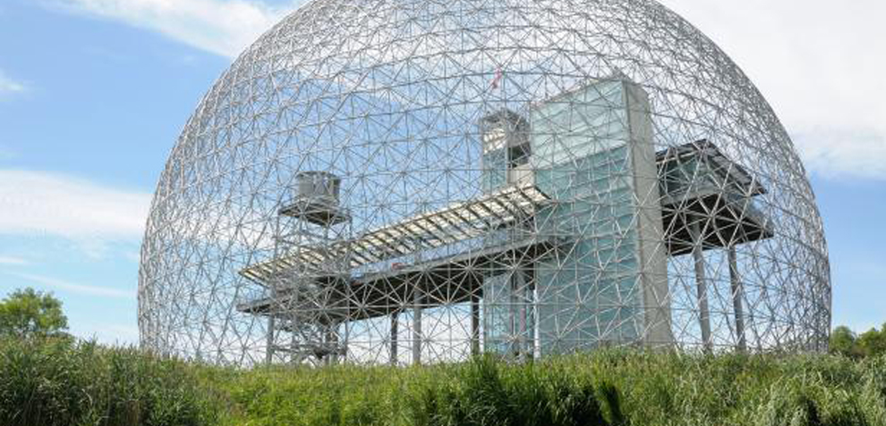
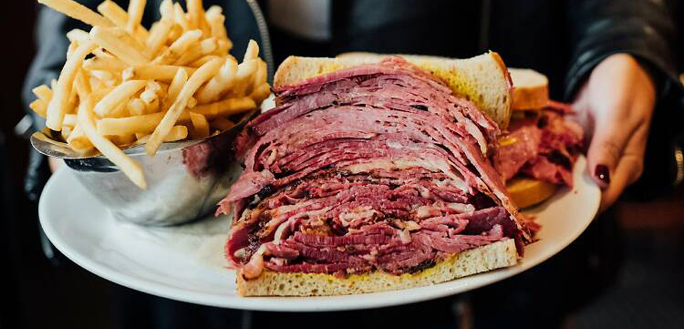
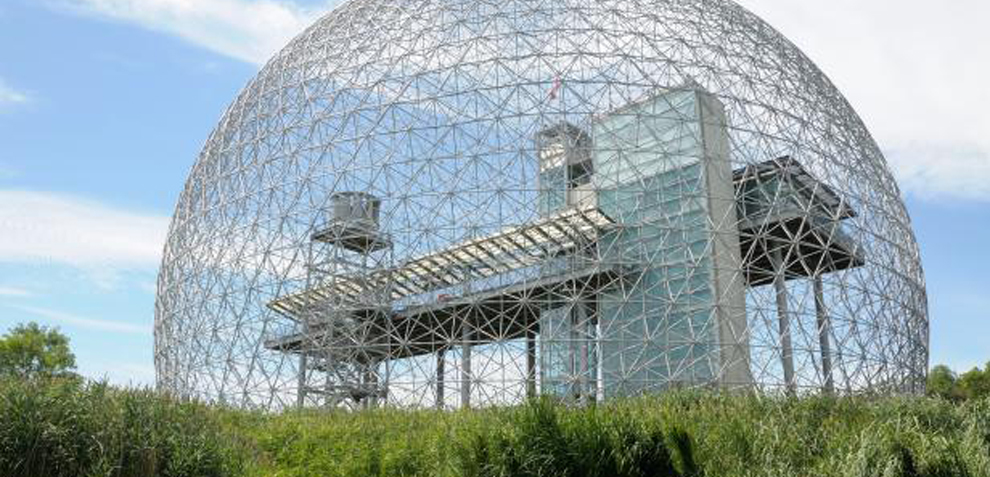
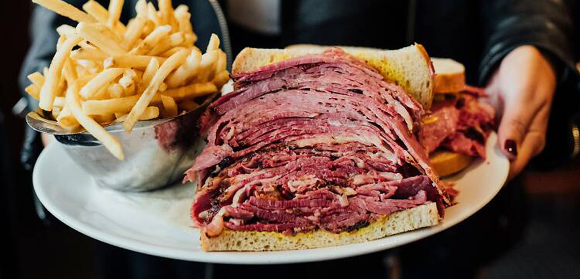
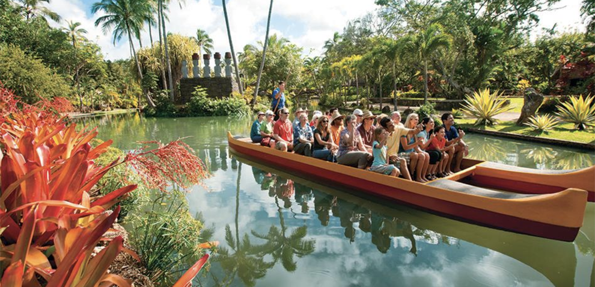
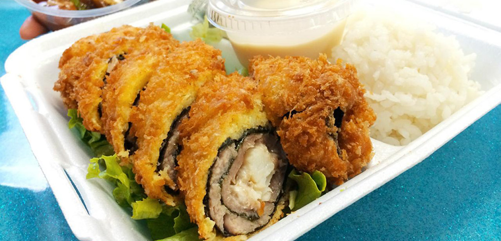
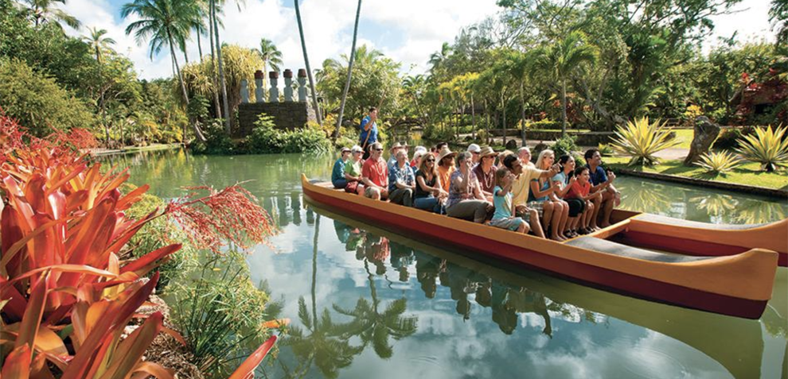
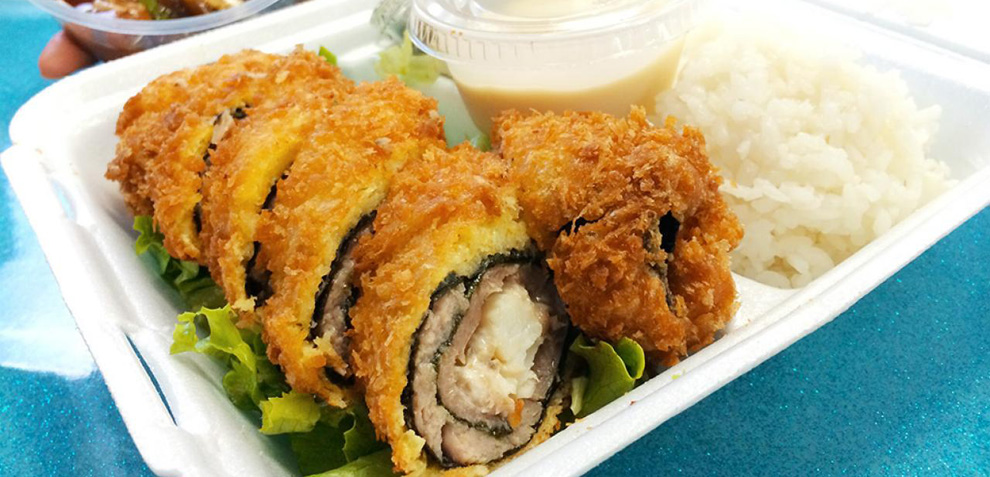

Kyoto, the ancient capital of Japan, is a city steeped in history and tradition. Nestled among rolling hills and surrounded by serene temples and gardens, Kyoto exudes a sense of timeless beauty. With its well-preserved wooden buildings and narrow alleyways, Kyoto offers a glimpse into Japan's rich cultural heritage.
One of Kyoto's most iconic landmarks is the Fushimi Inari Shrine, famous for its thousands of vermillion torii gates that wind through the forested hills. Visitors can wander through these gates and explore the tranquil paths, offering moments of contemplation and reflection.
Beyond its spiritual sites, Kyoto is also known for its culinary delights. From traditional kaiseki ryori, a multi-course meal that showcases seasonal ingredients, to savory bowls of ramen enjoyed at local noodle shops, Kyoto offers a diverse array of dining experiences.
Throughout the year, Kyoto hosts various festivals celebrating its cultural traditions, including the Gion Matsuri, one of Japan's most famous festivals, featuring vibrant processions of floats and traditional performances. Whether strolling through its historic districts, immersing oneself in its culinary delights, or participating in its lively festivals, Kyoto captivates visitors with its timeless charm and beauty.
Prague, the capital city of the Czech Republic, is a captivating blend of history, architecture, and Bohemian charm. With its cobblestone streets, medieval buildings, and romantic bridges spanning the Vltava River, Prague is often described as one of the most picturesque cities in Europe.
At the heart of Prague lies the historic Old Town Square, a bustling hub lined with colorful baroque buildings and dominated by the impressive Gothic spires of the Church of Our Lady before Týn. Here, visitors can soak in the atmosphere while enjoying street performers, browsing through market stalls, or sipping coffee at one of the many charming cafes.
The iconic Charles Bridge, adorned with statues of saints, offers breathtaking views of the city and is a popular spot for both tourists and locals alike. Crossing the bridge leads to the enchanting Prague Castle complex, perched on a hill overlooking the city. Within the castle grounds, visitors can explore St. Vitus Cathedral, the Old Royal Palace, and the picturesque Golden Lane.
Prague is also a city rich in cultural experiences, with world-class museums, theaters, and concert halls. From the impressive collections of art at the National Gallery to the classical music concerts held in historic venues such as the Municipal House, Prague offers a wealth of cultural delights.
With its vibrant nightlife, thriving food scene, and rich cultural heritage, Prague continues to enchant visitors from around the globe, offering a glimpse into centuries of history and a taste of Bohemian allure.
Sydney, Australia's largest city, is renowned for its stunning harbor, iconic landmarks, and vibrant culture. At its heart is the Sydney Opera House, alongside the Sydney Harbour Bridge. The harbor offers sailing, ferry rides, and waterfront dining.
Bondi Beach, a global draw, features a lively scene with cafes and shops along Campbell Parade. The Bondi to Coogee Coastal Walk offers breathtaking ocean views and access to secluded spots. Sydney's neighborhoods cater to diverse interests. The historic Rocks area reflects colonial heritage, while Darling Harbour offers entertainment like the SEA LIFE Sydney Aquarium.
Cultural enthusiasts can explore top museums like the Art Gallery of New South Wales. Sydney's calendar is full of events, from the Sydney Festival to the light festival Vivid Sydney. Sydney's food scene is diverse, from fresh seafood at the Sydney Fish Market to international flavors in Surry Hills and Newtown.
With its natural beauty, landmarks, and cultural offerings, Sydney captivates visitors.
Montreal, the largest city in Quebec, Canada, is renowned for its vibrant culture, historic charm, and culinary delights. The city's rich tapestry of neighborhoods, from the cobblestone streets of Old Montreal to the artistic vibe of Plateau-Mont-Royal, offers something for everyone.
Old Montreal, with its stunning architecture and European flair, is a favorite among visitors. The Notre-Dame Basilica, with its intricate interior, and the Old Port, lined with shops and cafes, are must-see attractions. Nearby, Mount Royal Park provides green space and panoramic views of the city skyline.
Montreal is a city of festivals, with events celebrating everything from jazz and comedy to food and culture. The Montreal International Jazz Festival, the largest of its kind in the world, draws music lovers from far and wide. In the summer, the streets come alive with sidewalk cafes, outdoor markets, and street performers.
Culinary enthusiasts flock to Montreal for its diverse food scene. From classic French cuisine to innovative fusion dishes, the city offers an array of dining experiences. Iconic dishes like poutine, smoked meat sandwiches, and bagels are must-try specialties.
With its mix of old-world charm and modern energy, Montreal captivates visitors with its unique blend of history, culture, and joie de vivre.
Honolulu, the capital city of Hawaii, is a tropical paradise known for its stunning beaches, rich cultural heritage, and laid-back atmosphere. Waikiki Beach, with its golden sands and turquoise waters, is a world-famous destination for surfing, swimming, and soaking up the sun.
Diamond Head, the iconic volcanic crater overlooking Waikiki, offers hiking trails and panoramic views of the coastline. Nearby, the historic neighborhood of Honolulu's Chinatown showcases a vibrant mix of Asian cultures, with colorful markets, art galleries, and authentic eateries.
Honolulu is also home to Pearl Harbor, a historic site commemorating the events of December 7, 1941, and the USS Arizona Memorial, honoring those who lost their lives in the attack. The Bishop Museum, with its extensive collection of Hawaiian artifacts and exhibits, provides insight into the island's rich history and culture.
Throughout the year, Honolulu hosts numerous cultural events and festivals, including the Aloha Festivals and the Honolulu Marathon. These celebrations showcase the island's diverse traditions, music, and cuisine.
With its warm climate, breathtaking scenery, and welcoming spirit of aloha, Honolulu offers a slice of paradise for visitors from around the world.


 



 


